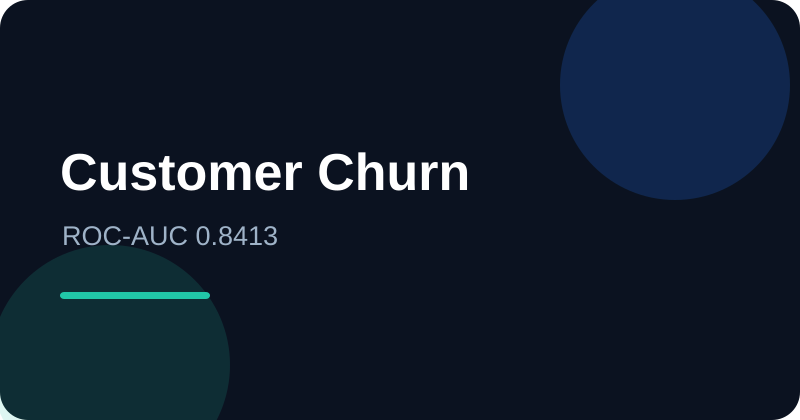

01. Customer Churn Prediction
End-to-end telecom churn analysis using the IBM Telco Customer Churn dataset. The project compares Logistic Regression, Decision Tree, and Random Forest using cross-validation and holdout testing. Logistic Regression achieved the strongest ROC-AUC at 0.8413 with 78.34% churn recall.